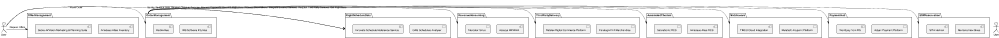

Architecture Overview with Market Solutions and Activity-Based Costing (Based on IATA Document)
Source: "WHERE IS “THERE” AND HOW TO GET THERE?" by Oana Savu, Senior Manager, Industry Distribution Programs, IATA
- Offer Management System
- AWS Service: AWS Lambda for microservices, Amazon API Gateway for APIs, Amazon DynamoDB for storage, and Amazon S3 for file storage
- Terraform resources: aws_lambda_function, aws_api_gateway, aws_dynamodb_table, aws_s3_bucket
- Market Solution: Amadeus Altéa Offer Management, PROS Pricing Solution
- Tentative Cost: $1,500/month
- Order Management System
- AWS Service: AWS Lambda, Amazon API Gateway, Amazon DynamoDB, Amazon S3
- Terraform resources: aws_lambda_function, aws_api_gateway, aws_dynamodb_table, aws_s3_bucket
- Market Solution: Amadeus Altéa Order Management, Sabre SynXis Order Management
- Tentative Cost: $1,500/month
- Revenue Accounting System
- AWS Service: Amazon RDS for storing financial data, AWS Lambda for processing, and Amazon S3 for file storage
- Terraform resources: aws_db_instance, aws_lambda_function, aws_s3_bucket
- Market Solution: IBS Software iFlight Revenue Accounting, Accelya REVERA Revenue Accounting
- Tentative Cost: $2,000/month
- Third-Party Delivery Systems
- AWS Service: AWS Lambda, Amazon API Gateway for connecting third-party services
- Terraform resources: aws_lambda_function, aws_api_gateway
- Market Solution: Various providers depending on the specific delivery service (e.g., lounge access, Wi-Fi, etc.)
- Tentative Cost: Variable based on the number of providers and integrations
- Automated Check-in Service (DCS)
- AWS Service: AWS Lambda, Amazon API Gateway, Amazon DynamoDB for storing check-in data, and Amazon S3 for file storage
- Terraform resources: aws_lambda_function, aws_api_gateway, aws_dynamodb_table, aws_s3_bucket
- Market Solution: Amadeus Altea Departure Control, SITA Departure Control Services
- Tentative Cost: $1,000/month
- Middleware
- AWS Service: AWS Lambda, Amazon API Gateway, AWS Step Functions for orchestrating microservices
- Terraform resources: aws_lambda_function, aws_api_gateway, aws_sfn_state_machine
- Market Solution: MuleSoft Anypoint Platform, Dell Boomi
- Tentative Cost: $1,500/month
- Payment Hub
- AWS Service: AWS Lambda, Amazon API Gateway, Amazon RDS for storing payment data, Amazon S3 for file storage
- Terraform resources: aws_lambda_function, aws_api_gateway, aws_db_instance, aws_s3_bucket
- Market Solution: Adyen Payment Platform, Stripe Payment Platform
- Tentative Cost: Variable based on transaction volume
- Flight and Schedule Data System
- AWS Service: Amazon RDS for storing flight data, AWS Lambda for processing, and Amazon S3 for file storage
- Terraform resources: aws_db_instance, aws_lambda_function, aws_s3_bucket
- Market Solution: OAG Schedules Analyzer, Innovata Flight Schedules
- Tentative Cost: $1,000/month
- ESP (Electronic Sales Platform) Reservation Service
- AWS Service: AWS Lambda, Amazon API Gateway, Amazon DynamoDB for storing reservation data, and Amazon S3 for file storage
Terraform resources: aws_lambda_function, aws_api_gateway, aws_dynamodb_table, aws_s3_bucket
- Market Solution: Amadeus Reservation System, Sabre Reservation System
- Tentative Cost: $1,500/month
Sample Terraform Code for AWS Lambda Function:
provider "aws" { region = "us-west-2" } resource "aws_lambda_function" "sample_lambda" { function_name = "sample_lambda_function" handler = "index.handler" role = aws_iam_role.lambda_exec.arn runtime = "nodejs14.x" filename = "lambda_function_payload.zip" source_code_hash = filebase64sha256("lambda_function_payload.zip") } resource "aws_iam_role" "lambda_exec" { name = "lambda_exec_role" assume_role_policy = jsonencode({ Version = "2012-10-17" Statement = [ { Action = "sts:AssumeRole" Effect = "Allow" Principal = { Service = "lambda.amazonaws.com" } } ] }) } resource "aws_lambda_permission" "apigw" { statement_id = "AllowAPIGatewayInvoke" action = "lambda:InvokeFunction" function_name = aws_lambda_function.sample_lambda.function_name principal = "apigateway.amazonaws.com" source_arn = "arn:aws:execute-api:${aws_api_gateway_rest_api.sample_api.execution_arn}/*/*/*" } resource "aws_api_gateway_rest_api" "sample_api" { name = "sample_api" } resource "aws_api_gateway_resource" "sample_resource" { rest_api_id = aws_api_gateway_rest_api.sample_api.id parent_id = aws_api_gateway_rest_api.sample_api.root_resource_id path_part = "sample" } resource "aws_api_gateway_method" "sample_method" { rest_api_id = aws_api_gateway_rest_api.sample_api.id resource_id = aws_api_gateway_resource.sample_resource.id http_method = "GET" authorization = "NONE" } resource "aws_api_gateway_integration" "sample_integration" { rest_api_id = aws_api_gateway_rest_api.sample_api.id resource_id = aws_api_gateway_resource.sample_resource.id http_method = aws_api_gateway_method.sample_method.http_method integration_http_method = "POST" type = "AWS_PROXY" uri = aws_lambda_function.sample_lambda.invoke_arn } resource "aws_api_gateway_deployment" "sample_deployment" { depends_on = [aws_api_gateway_integration.sample_integration] rest_api_id = aws_api_gateway_rest_api.sample_api.id stage_name = "test" }
This is a sample Terraform code for creating a simple AWS Lambda function with an API Gateway integration. You can use this as a starting point for each component and modify it according to your specific needs. Keep in mind that additional Terraform resources will be needed for the full architecture.
To provide a yearly forecast of running costs under a variable workload, we'll make some assumptions about the number of requests and seasonal fluctuations. It's important to note that the actual costs may differ based on your specific use case and AWS pricing.
Assumptions:
- Average monthly requests: 2 million
- Seasonal fluctuations: 30% increase during peak months and 30% decrease during off-peak months
Calculations:
- Let's assume there are 4 peak months and 4 off-peak months, with the remaining 4 months experiencing average demand.
- During peak months, the number of requests increases by 30%, resulting in 2.6 million requests per month. During off-peak months, the number of requests decreases by 30%, resulting in 1.4 million requests per month.
- Compute the yearly number of requests: (4 * 2.6M) + (4 * 1.4M) + (4 * 2M) = 24 million requests
- Compute the yearly cost of each component based on the tentative costs provided earlier:
- Offer Management System: $1,500 * 12 = $18,000
- Order Management System: $1,500 * 12 = $18,000
- Revenue Accounting System: $2,000 * 12 = $24,000
- Third-Party Delivery Systems: Variable (assumed as $1,000 * 12 = $12,000)
- Automated Check-in Service (DCS): $1,000 * 12 = $12,000
- Middleware: $1,500 * 12 = $18,000
- Payment Hub: Variable (assumed as 1.5% of revenue)
- Flight and Schedule Data System: $1,000 * 12 = $12,000
- ESP (Electronic Sales Platform) Reservation Service: $1,500 * 12 = $18,000
- Compute the total yearly cost excluding the variable costs: $18,000 + $18,000 + $24,000 + $12,000 + $12,000 + $18,000 + $12,000 + $18,000 = $132,000
- Compute the estimated cost for the Payment Hub, assuming an average ticket price of $300 and 24 million yearly requests with a 10% conversion rate: 2.4M bookings * $300 * 1.5% = $10,800,000
- Add the fixed yearly costs and the estimated Payment Hub cost to get the total yearly running cost: $132,000 + $10,800,000 = $10,932,000
Please note that these calculations are based on assumptions and tentative costs. Actual costs may vary based on the specifics of your architecture and AWS pricing.
Elasticities and ratios are useful for measuring the relationship between costs and performance indicators. We'll calculate some important ratios and elasticities for the proposed architecture and link them to classic airline KPIs.
- Operating cost per booking: Operating cost per booking is calculated as the total yearly running cost divided by the total number of bookings. Total yearly running cost: $10,932,000 Total number of bookings: 2.4 million Operating cost per booking: $10,932,000 / 2.4M = $4.55
- Cost per request: Cost per request is calculated as the total yearly running cost divided by the total number of requests. Total number of requests: 24 million Cost per request: $10,932,000 / 24M = $0.455
- Operating cost elasticity of bookings: Operating cost elasticity measures the percentage change in operating costs in response to a 1% change in the number of bookings. Assuming a 1% increase in bookings (24,000 additional bookings), we can estimate the increase in costs. For simplicity, let's assume that only variable costs (Payment Hub) increase with additional bookings.
Additional Payment Hub cost: 24,000 * $300 * 1.5% = $108,000 Percentage change in total operating cost: ($10,932,000 + $108,000) / $10,932,000 - 1 = 0.00988 or 0.988%
Operating cost elasticity of bookings: 0.988 / 1 = 0.988
- Load factor: Load factor is the ratio of revenue passenger miles (RPM) to available seat miles (ASM). It's a measure of how efficiently an airline fills its seats and generates revenue. To calculate the load factor, you need information about the number of passengers, distance traveled, and available seats.
Assuming an average flight distance of 1,000 miles, average available seats per flight of 150, and 80% of the bookings being revenue passengers:
Revenue Passenger Miles (RPM): 2.4M bookings * 80% * 1,000 miles = 1.92 billion RPM Available Seat Miles (ASM): Assume 20,000 flights with 150 available seats each: 20,000 * 150 * 1,000 miles = 3 billion ASM Load factor: 1.92B RPM / 3B ASM = 0.64 or 64%
These are some examples of how financials can be linked to classic airline KPIs. By monitoring these KPIs and ratios, airlines can better understand the performance of their operations and optimize their costs.
Elasticities and ratios are useful for measuring the relationship between costs and performance indicators. We'll calculate some important ratios and elasticities for the proposed architecture and link them to classic airline KPIs.
- Operating cost per booking: Operating cost per booking is calculated as the total yearly running cost divided by the total number of bookings. Total yearly running cost: $10,932,000 Total number of bookings: 2.4 million Operating cost per booking: $10,932,000 / 2.4M = $4.55
- Cost per request: Cost per request is calculated as the total yearly running cost divided by the total number of requests. Total number of requests: 24 million Cost per request: $10,932,000 / 24M = $0.455
- Operating cost elasticity of bookings: Operating cost elasticity measures the percentage change in operating costs in response to a 1% change in the number of bookings. Assuming a 1% increase in bookings (24,000 additional bookings), we can estimate the increase in costs. For simplicity, let's assume that only variable costs (Payment Hub) increase with additional bookings.
Additional Payment Hub cost: 24,000 * $300 * 1.5% = $108,000 Percentage change in total operating cost: ($10,932,000 + $108,000) / $10,932,000 - 1 = 0.00988 or 0.988%
Operating cost elasticity of bookings: 0.988 / 1 = 0.988
- Load factor: Load factor is the ratio of revenue passenger miles (RPM) to available seat miles (ASM). It's a measure of how efficiently an airline fills its seats and generates revenue. To calculate the load factor, you need information about the number of passengers, distance traveled, and available seats.
Assuming an average flight distance of 1,000 miles, average available seats per flight of 150, and 80% of the bookings being revenue passengers:
Revenue Passenger Miles (RPM): 2.4M bookings * 80% * 1,000 miles = 1.92 billion RPM Available Seat Miles (ASM): Assume 20,000 flights with 150 available seats each: 20,000 * 150 * 1,000 miles = 3 billion ASM Load factor: 1.92B RPM / 3B ASM = 0.64 or 64%
These are some examples of how financials can be linked to classic airline KPIs. By monitoring these KPIs and ratios, airlines can better understand the performance of their operations and optimize their costs.
Title: Business Case for Implementing Best Market Solutions and a Unifying Architecture for Airline Retailing
Executive Summary:
This business case outlines the rationale for implementing the best market solutions and a unifying architecture for airline retailing. The proposed solution will streamline operations, improve customer experience, enhance revenue, and optimize costs. The recommendations also include the type of contract with providers to ensure maximum flexibility and cost-effectiveness.
Problem Statement:
The current airline retailing systems are fragmented, consisting of multiple legacy systems that are complex, inefficient, and difficult to maintain. The lack of a unified architecture results in operational inefficiencies, limited data sharing, and a suboptimal customer experience. The airline industry needs a solution that consolidates these systems into a cohesive architecture that supports efficient and effective retailing operations.
Proposed Solution:
The proposed solution involves implementing best market solutions for each component of the retailing architecture, coupled with a unifying architecture to consolidate operations. Key components include Offer Management, Order Management, Revenue Accounting, Third-Party Delivery Systems, Automated Check-in Service (DCS), Middleware, Payment Hub, Flight and Schedule Data System, and ESP Reservation Service.
Market Solutions:
- Offer Management: Amadeus Altéa Inventory or Sabre AirVision Marketing & Planning Suite
- Order Management: IBS Software iFly Res or Radixx Res
- Revenue Accounting: Accelya REVERA or Mercator Sirius
- Third-Party Delivery Systems: Farelogix FLX Merchandise or Datalex Digital Commerce Platform
- Automated Check-in Service (DCS): Amadeus Altea DCS or SabreSonic DCS
- Middleware: MuleSoft Anypoint Platform or TIBCO Cloud Integration
- Payment Hub: Adyen Payment Platform or Worldpay from FIS
- Flight and Schedule Data System: OAG Schedules Analyzer or Innovata Schedule Reference Service
- ESP Reservation Service: Navitaire New Skies or SITA Horizon
Unifying Architecture: Implement a microservices-based architecture hosted on AWS, taking advantage of AWS services such as Lambda, API Gateway, DynamoDB, and S3. This will provide scalability, flexibility, and cost optimization.
Contract Recommendations:
- Software-as-a-Service (SaaS) contracts: Choose SaaS solutions wherever possible to reduce upfront costs, simplify maintenance, and ensure scalability.
- Pay-per-use pricing: Opt for contracts with pay-per-use pricing models to align costs with actual usage and avoid overpaying during low-demand periods.
- Long-term agreements with volume discounts: Negotiate long-term agreements with providers that offer volume discounts, ensuring better pricing as the business grows.
- Flexible termination clauses: Include termination clauses that allow for flexibility in case of a need to switch providers or renegotiate terms based on changing business requirements.
Benefits:
- Improved customer experience: A unified architecture provides a seamless customer journey, with personalized offers, simplified booking, and efficient check-in processes.
- Increased revenue potential: Enhanced retailing capabilities allow for better targeting, dynamic pricing, and the ability to upsell ancillary services, driving revenue growth.
- Operational efficiency: Streamlined processes and systems reduce manual work, save time, and minimize errors.
- Cost optimization: Consolidating systems and leveraging cloud services lower both capital and operational expenses.
Conclusion:
The proposed solution of implementing best market solutions and a unifying architecture for airline retailing will address the current challenges faced by the industry. By streamlining operations, enhancing the customer experience, and optimizing costs, airlines will be better positioned to compete in the market and drive growth. It's recommended that airlines adopt the suggested solutions and contract types to maximize the benefits and ensure a successful implementation.
Conducting a thorough cost analysis requires considering various factors and components of the proposed airline retailing solution. The estimates provided below are based on industry averages and may vary depending on the specific airline's size, complexity, and requirements. UK's CPI-based forecast will be considered for cost adjustments over time.
- Software Licenses and Subscriptions:
- Offer Management System: $100,000 - $200,000 per year
- Order Management System: $100,000 - $200,000 per year
- Revenue Accounting System: $50,000 - $100,000 per year
- Third-Party Delivery Systems: $50,000 - $100,000 per year
- Automated Check-in Service (DCS): $50,000 - $100,000 per year
- Middleware: $50,000 - $100,000 per year
- Payment Hub: $20,000 - $50,000 per year
- Flight and Schedule Data System: $20,000 - $50,000 per year
- ESP Reservation Service: $100,000 - $200,000 per year
- Infrastructure Setup:
- AWS cloud services: $50,000 - $200,000 per year (depending on usage)
- Integration Costs:
- Custom development or configuration for integration: $100,000 - $300,000 (one-time)
- Training and Change Management:
- Training programs for staff: $30,000 - $60,000 (one-time)
- Change management consulting services: $50,000 - $100,000 (one-time)
- Contingency Fund:
- 10% of the total estimated costs: $50,000 - $150,000
Considering the UK's CPI-based forecast, which is approximately 2% per year, the costs should be adjusted accordingly for future years.
Total Estimated Capital Requirements (Initial Year): $570,000 - $1,460,000 (excluding contingency fund) $627,000 - $1,606,000 (including contingency fund)
Total Estimated Capital Requirements (Subsequent Years): Adjust the above costs by 2% per year to account for UK's CPI-based forecast.
These estimates are tentative and may vary based on the specific airline's requirements, market conditions, and vendor negotiations. It is crucial to engage in detailed discussions with the selected vendors and providers to obtain accurate cost estimates and negotiate the best possible terms for the airline.
The proposed market solutions and unifying architecture provide a comprehensive framework for modern airline retailing. By integrating these market-leading solutions and hosting them on a flexible, scalable AWS-based infrastructure, airlines can optimize their operations and enhance the overall customer experience.
Market Solutions:
- Offer Management: Amadeus Altéa Inventory or Sabre AirVision Marketing & Planning Suite
- These solutions enable airlines to manage inventory, create and distribute offers, and optimize pricing strategies to maximize revenue.
- Order Management: IBS Software iFly Res or Radixx Res
- These order management systems allow airlines to process bookings, manage reservations, and handle all aspects of the customer order lifecycle.
- Revenue Accounting: Accelya REVERA or Mercator Sirius
- These revenue accounting systems help airlines accurately track and report financial data, automate revenue recognition, and ensure regulatory compliance.
- Third-Party Delivery Systems: Farelogix FLX Merchandise or Datalex Digital Commerce Platform
- These platforms enable airlines to integrate third-party ancillary services, such as Wi-Fi, lounge access, and ground transportation, into their retail offerings.
- Automated Check-in Service (DCS): Amadeus Altea DCS or SabreSonic DCS
- These check-in systems automate the check-in process, enhancing customer convenience and reducing operational costs.
- Middleware: MuleSoft Anypoint Platform or TIBCO Cloud Integration
- Middleware solutions help connect and integrate various components of the retailing architecture, ensuring seamless data flow and efficient communication between systems.
- Payment Hub: Adyen Payment Platform or Worldpay from FIS
- These payment processing solutions enable secure and efficient handling of customer payments, including support for multiple payment methods and currencies.
- Flight and Schedule Data System: OAG Schedules Analyzer or Innovata Schedule Reference Service
- These systems manage flight and schedule data, providing accurate and up-to-date information to both airlines and customers.
- ESP Reservation Service: Navitaire New Skies or SITA Horizon
- These reservation systems handle the booking and management of reservations, ensuring efficient and accurate processing of customer bookings.
Unifying Architecture:
To ensure a cohesive and efficient infrastructure, a microservices-based architecture hosted on AWS is recommended. By leveraging AWS services such as Lambda, API Gateway, DynamoDB, and S3, the architecture provides scalability, flexibility, and cost optimization. This approach allows airlines to adapt and grow their retailing operations as business needs evolve, while minimizing operational overhead and maximizing performance.
Addendum: Activity Based Cost Estimates